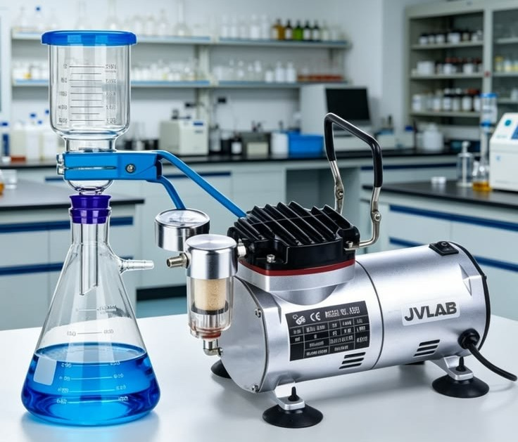
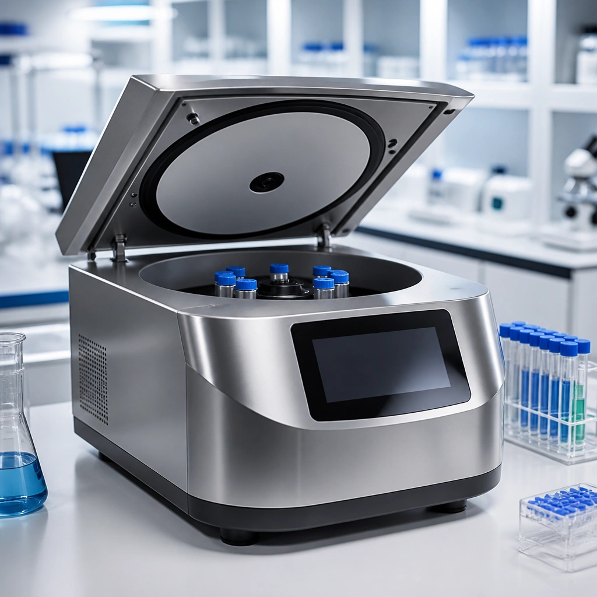
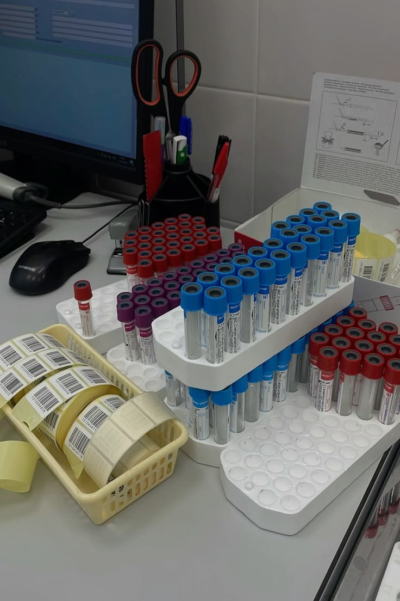

Healthcare
Clinical and hospital support
Supplies that help procurement teams keep wards, clinics, and diagnostic units ready for daily demand with dependable quality and clear product groupings.
Aco Liff Medical Supplies Ltd supports hospitals, clinical laboratories, universities, industrial teams, environmental programs, and quality control operations with dependable products, organized sourcing, and responsive service.
Delivering certified consumables, precision instruments, and procurement clarity across healthcare, research, industrial, and environmental sectors.

Premium product imagery and reliable service details that help buyers evaluate critical supplies at a glance.
Aco Liff is structured around how medical and laboratory buyers actually source products: by category, specification, compliance need, and delivery urgency. The result is a clearer path for hospitals, laboratories, and procurement teams that need reliable products without wasted time.
Supplies that help procurement teams keep wards, clinics, and diagnostic units ready for daily demand with dependable quality and clear product groupings.
Technical consumables and instruments that support methodical workflows, repeatable results, and the pace of research in academic and private settings.
Solutions for chemical analysis, process monitoring, and quality control where consistency, traceability, and documentation matter.
Reliable products for water, soil, and air analysis programs, designed to support field-to-lab continuity and evidence-based reporting.
Flexible support for teaching laboratories, demonstration suites, and research training environments across colleges and universities.
Practical safety equipment, PPE, and disposal solutions that help institutions maintain clean, compliant, and protected spaces.
Our product portfolio is carefully organized to meet the needs of hospitals, laboratories, research institutions, universities, and industrial facilities. Every category includes dependable products sourced from trusted manufacturers to support quality healthcare, scientific research, and laboratory excellence.

Premium laboratory consumables and disposables selected for dependable daily use in clinical, research, and testing environments.

High-performance instruments that support accurate testing, consistent readings, and reliable laboratory operations.
Support for research teams that need dependable supplies, flexible ordering, and a steady pathway from planning to execution.
Patient-support and mobility equipment that helps care facilities maintain comfort, movement, and operational readiness.

Quality-control products for teams working in industrial QA, food processing, water analysis, and environmental monitoring.

Protective products and waste-disposal supplies that help institutions maintain safer spaces and clear operating standards.
Aco Liff serves hospitals, laboratories, research teams, and industrial buyers with dependable products, clear specifications, and practical support that makes procurement easier.
Our team works closely with procurement officers, laboratory managers, and healthcare professionals to identify suitable products, prepare quotations, and ensure timely delivery based on each institution's operational requirements.
We supply a comprehensive range of laboratory consumables, diagnostic equipment, hospital furniture, safety products, reagents, and scientific instruments to meet the diverse needs of healthcare and research facilities.
We prioritize quality, reliability, and compliance by sourcing products that meet recognized industry standards, helping our customers maintain confidence in every procedure and laboratory process.
Through efficient sourcing and dependable logistics, we help healthcare facilities, laboratories, educational institutions, and industrial organizations receive the products they need when they need them.

Our commitment goes beyond supplying products. We strive to build long-term partnerships by providing dependable solutions, responsive technical support, and consistent service that enable healthcare professionals, researchers, and laboratory specialists to focus on delivering accurate results and quality patient care.